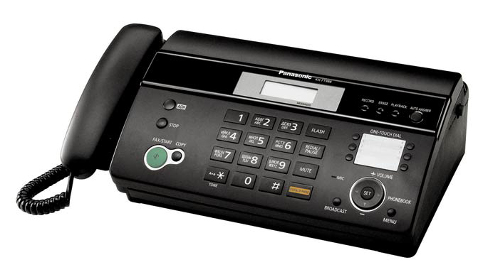
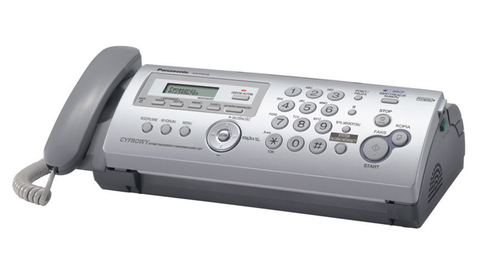
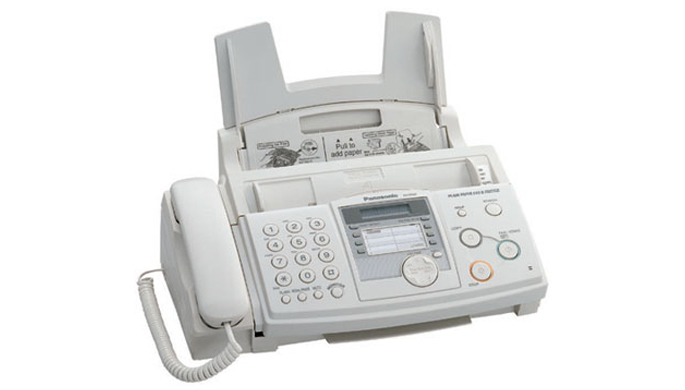
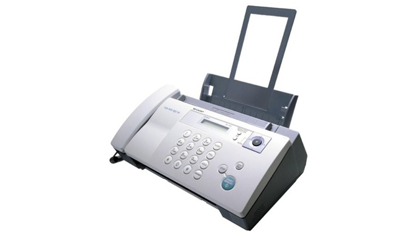
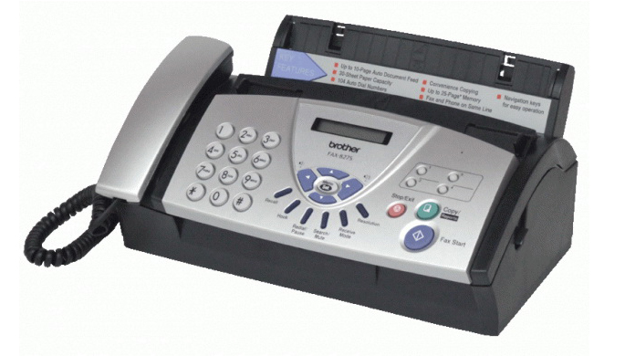

Giới thiệu sản phẩm
Máy fax Sharp FO-A660 Tính năng/Chức năng copy tiện lợi 64 mức độ điều chỉnh bán sắc Chức năng loại bỏ những bản fax không mong muốn.


Chức năng trợ giúp Khay chứa giấy 50 tờ Chức năng in tiêu đề Chức năng thông báo chuyển nhận Tự động chuyển chế độ Fax/Điện thoại



THÔNG SỐ KỸ THUẬT
Sao chụp/in: kỹ thuật số (SOPM)
Khay nạp bản gốc ADF: 20 tờ
Tốc độ copy/in : 12 bản/phút A4
Khổ giấy: lớn nhất A4, nhỏ nhất A6
Phóng to thu nhỏ từ: 25 – 400%.
01 khay: dưới 250 tờ ,
khay nạp tay: 01 tờ .
Thời gian chuyển Fax: Khoảng 3 giây.
Bộ nhớ: 2MB ( Khoảng 125 tờ A4).
Xuất xứ: Thái Lan.
Bảo hành: 12 tháng hoặc 30.000 bản.